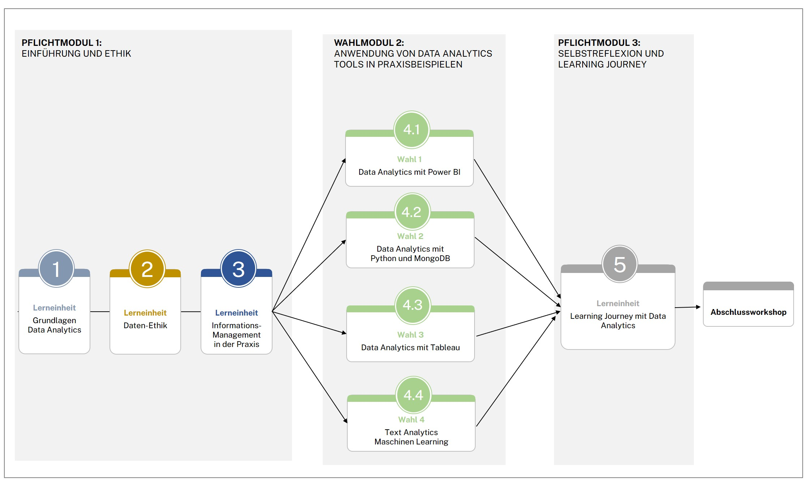
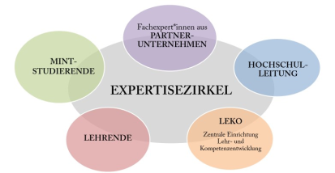

Flexibel, kompakt, kompetenzorientiert
Micro-Credential als Format für Data Literacy Education am Beispiel des MC4Data-Qualifizierungsprogramms der TH Nürnberg
Toolbeschreibung
MC4Data ist die Abkürzung für das Micro-Credential-Programm für Data Analytics. Wir orientieren uns an der Empfehlung des europäischen Kommissionsrates sowie am europäischen Ansatz für Micro-Credentials für lebenslanges Lernen und Beschäftigungsfähigkeit. „Micro-Credentials sind Nachweise über die Lernergebnisse, die eine Lernende bzw. ein Lernender im Rahmen einer weniger umfangreichen Lerneinheit erzielt hat“ (Europäischen Union, 2022: 13). Micro-Credentials helfen dabei, die Ergebnisse kleiner, maßgeschneiderter Lernerfahrungen zu zertifizieren. Dadurch ermöglichen sie die Flexibilisierung von Lernwegen und die Erweiterung bestehender Studienangebote (Modus, 2023: 8).
In Form eines Micro-Credentials ist MC4Data lernergebnisorientiert und ermöglicht Studierenden dabei, flexibel und kompakt innerhalb von ein bis zwei Semestern Kenntnisse, Fertigkeiten und Grundkompetenzen im Bereich Data Analytics zu erwerben. Dadurch können sie schneller auf die gesellschaftlichen und arbeitsmarktbezogenen Anforderungen im Bereich Data Analytics reagieren, die in verschiedenen Veröffentlichungen beleuchtet wurden, beispielsweise in dem Diskussionspapier des Stifterverbandes über den Qualifizierungsbedarf von Mitarbeitenden im Bereich IT und Datenanalyse (Stifterverband, 2021: 5), in der Studie von Kienbaum zum Thema Future Skills – Future Learning (Kienbaum, 2021: 20) und im Digitalplan Bayern 2030 (Digitales, 2022). Das Programm befähigt Studierende zur Schließung individueller Kompetenzlücken, ohne die traditionellen und regulären Qualifikationen zu ersetzen.
Strukturell verortet ist das MC4Data-Programm bei der zentralen Einrichtung für Lehr- und Kompetenzentwicklung der TH Nürnberg in enger Zusammenarbeit mit den MINT-Studiengängen und Partnerunternehmen.
Voraussetzungen & Zielgruppen
Das Programm richtet sich in erster Linie an MINT-Studierende der TH Nürnberg. Die Teilnahme an dem MC4Data-Programm setzt keine Vorkenntnisse seitens der Studierenden voraus. Das Niveau der Lernerfahrung, die zum Erwerb des Micro-Credentials führt, liegt beim Niveau 6 des Deutschen Qualifikationsrahmens für lebenslanges Lernen (Bachelor-Niveau).
Kompetenzen
Studierende erwerben die Kompetenz, mit Daten selbstbewusst umzugehen, ihre Datennutzung kritisch zu hinterfragen und zu beurteilen. Sie verstehen die Grundlagen von Data-Analytics-Prozessen, um datenbasierte Problemlösungen zu finden und zur effektiven Entscheidungsfindung beizutragen. Sie lernen Data-Analytics-Tools kennen und wenden diese in Praxisbeispielen unter Betreuung und Begleitung von Personen mit FAchexpertise an. Studierende sind in der Lage, selbst zu reflektieren, eigene Kompetenzlücken im Bereich Data Analytics zu identifizieren und diese eigenständig zu schließen.
Sie arbeiten in interdisziplinären Gruppen zusammen, sammeln Hands-on-Erfahrungen mit Fachpersonal aus Partnerunternehmen und profitieren durch direkte Kontakte zu Netzwerkunternehmen des MC4Data-Programms.
Lerninhalte & Methoden
Der Workload des MC4Data-Programms beträgt 150 Stunden. Das entspricht einem studentischen Arbeitsumfang von 5 ECTS. Inhaltlich wird das MC4Data-Programm in drei aufeinander aufbauenden Modulen konkretisiert. Die Lerneinheiten in einzelnen Modulen werden von verschiedenen Formaten wie Workshops, Seminaren und Onlineselbstlernkursen gestaltet. Abbildung 1 veranschaulicht die Programmstruktur.

Im MC4Data-Modulhandbuch werden die kompetenzorientierten Beschreibungen der einzelnen Module erfasst. Studierende können sich über die Lernangebote, Inhalte und Kompetenzen sowie über die Voraussetzungen für die Teilnahme und Leistungsnachweise informieren. Das MC4Data-Modulhandbuch sowie die einzelnen kompetenzorientierten Modulbeschreibungen helfen, die Möglichkeiten der Anerkennung des MC4Data-Programms für MINT-Studiengänge zu überprüfen.
Ein E-Portfolio wird als Instrument zur Aufzeichnung des Lernprozesses eingesetzt. Studierende reflektieren und dokumentieren als Teil des Leistungsnachweises Schritt für Schritt nach jedem Lernangebot ihre erworbenen Erkenntnisse in dem E-Portfolio, um den eigenen Lernfortschritt beziehungsweise Lernprozess aufzuzeigen. Ein besonderer Fokus liegt darauf, dass Studierende selbstständig und mit Eigenverantwortung an ihren E-Portfolios arbeiten. Die Portfolioarbeit sowie die Präsentationen im Abschlussworkshop dienen der Leistungsbewertung, wenn die Notenbildung für einen Studiengang, der das MC4Data-Programm anerkennt, vorausgesetzt ist.
In Bezug auf das lebenslange Lernen bietet Modul 3 den Studierenden eine Begleitung an, um individuelle Kompetenzprofile und Lernbedürfnisse sowie eigene Lernpfade im Bereich Data Analytics festzulegen. Die Studierenden werden befähigt, geeignete Massive Open Online Courses (MOOCs) zu identifizieren und sich selbstständig fortzubilden sowie bezüglich der Trends und Entwicklungen im Bereich Data Analytics auf dem aktuellen Stand zu bleiben.
Um die Qualität des Programms zu gewährleisten und kontinuierlich zu verbessern, wird ein Expertisezirkel für MC4Data etabliert. Der Expertisezirkel setzt sich das Ziel, die Inhalte sowie die didaktischen Lehr- und Lernformate des MC4Data-Programms zu evaluieren, für die Zielgruppe der MINT-Studierenden anzupassen und weiterzuentwickeln. Abbildung 2 stellt die in den Expertisezirkel involvierten Akteure dar.

Erkenntnisse & Erfahrungen
Bei der Implementierung von Micro-Credentials existieren verschiedene Herausforderungen. Als Erstes müssen Rahmenbedingungen und die rechtliche Einordnung von Micro-Credentials und deren Abschlusssystematik in der Allgemeinen Prüfungsordnung der Hochschule geklärt werden.
An der Hochschule ist das Konzept der Micro-Credentials bisher wenig bekannt. Die Kriterien für die Anerkennung und Anrechnung in den Curricula müssen geklärt werden, um die Akzeptanz von Micro-Credentials zu erhöhen.
Micro-Credentials sind Eigentum der Lernenden und können geteilt werden (Europäischen Union, 2022: 13). Im Rahmen des MC4Data-Programms werden zwei Formate (digitale Badges und der Abschluss Micro-Degree) als Prototypen entwickelt und pilothaft implementiert. Studierende können ihre erworbenen digitalen Badges und den Micro-Degree über Sozialplattformen wie LinkedIn teilen. Dadurch kann die Sichtbarkeit des Kompetenzprofils von Studierenden über Sozialplattformen verbessert werden. Die technische Umsetzung dieser Formate stellt eine Herausforderung dar, weil ein Ökosystem sowie eine IT-Infrastruktur zur Ausstellung und Verifizierung von Micro-Credential-Formaten noch aufgebaut werden müssen.
Wir sehen das hohe Potenzial von Micro-Credentials und wollen den Studierenden im Rahmen des MC4Data-Programms die Möglichkeit anbieten, Grundlagen der Data Analytics zu erwerben und ihr Kompetenzprofil über soziale und Networking-Plattformen besser sichtbar zu machen. Darüber hinaus ermöglichen wir die Vernetzung mit Fachexpert:innen und Kontakte zu Unternehmen und erleichtern damit den Berufseinstieg im Bereich Data Analytics. Wir begleiten Studierende dabei, individuelle Lernpfade im Themenbereich Data Analytics selbst zu erstellen und zu verfolgen. Das Micro-Credential ist ein geeignetes Format, um innerhalb einer kurzen Zeit Kompetenzen im Bereich Data Analytics zu vermitteln. Diese Kompetenzen zählen zu Future Skills und entsprechen den arbeitsmarktbezogenen Bedürfnissen.
Hilfreiche Links
Autorinnenprofil
Thu Van Le Thi, Diplom-Kauffrau, ist Referentin im Bereich Digitalkompetenzen bei der zentralen Einrichtung für Lehr- und Kompetenzentwicklung der Technischen Hochschule Nürnberg Georg Simon Ohm. Sie konzipiert und implementiert fakultätsübergreifende Qualifizierungsprogramme für Studierende, unter anderem das Hochschulzertifikat Digitale Kompetenzen (DigKom), das Micro-Credential-Programm für Data Analytics (MC4Data) und Summer School / Spring School for Future Skills. Von 2017 bis 2020 war sie Koordinatorin für Schlüsselkompetenzen und betreute Angebote zu Schlüsselkompetenzen, Lerntutorenqualifizierung sowie das SK_Plus Programm für Lehrende zur Integration von Schlüsselkompetenzen in die Lehre. Sie hat zuvor ihr Diplomstudium an der Friedrich-Alexander-Universität Erlangen-Nürnberg absolviert.
Kontakt: thuvan.lethi@th-nuernberg.de
URL: https://www.th-nuernberg.de/person/le-thi-thu-van/